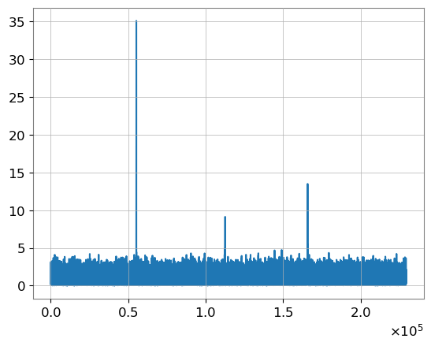

2024 NRGW 겨울학교 문제 풀이
방학에중력파캠프라니_김동찬
1. 중력파형의 match 계산 코드
- $T = Ndt = 1/df$
- $\text{sample rate} = \text{number of datas / 1s}$
- 전체 시간이 $8$초이고 sample rate가 $4096\text{ Hz}$이면 전체 데이터 수는 $8 * 4096$개,
- $df = 1 / T = 1 / 8 \text{ Hz}$
- Time -> Freq 변환시 데이터 수 $N\to \lfloor \frac{N}{2} \rfloor + 1$
tar_duration = 8
tar_df = 1 / tar_duration
tar_f_low = 10
tar_f_high = 2048
tar_sample_rate = 4096
tar_dt = 1 / tar_sample_rate
tar_N = tar_duration * tar_sample_rate
hp1, _ = get_fd_waveform(approximant="IMRPhenomXPHM", mass1=10, mass2=8,
delta_f=tar_df, f_lower=tar_f_low, f_final=tar_f_high)
hp2, _ = get_fd_waveform(approximant="TaylorF2", mass1=10, mass2=8,
delta_f=tar_df, f_lower=tar_f_low, f_final=tar_f_high)
hp3, _ = get_fd_waveform(approximant="IMRPhenomD", mass1=10, mass2=8,
delta_f=tar_df, f_lower=tar_f_low, f_final=tar_f_high)
psd = aLIGODesignSensitivityT1800044(tar_N // 2 + 1, tar_df, tar_f_low)
def match(h1, h2, psd, f_low, f_high):
df = h1.delta_f
dt = h1.delta_t
ind_low = int(f_low / df)
ind_high = int(f_high / df)
n = len(h1)
N = 2 * (n - 1)
before_ifft = zeros(N, dtype=np.complex128)
before_ifft[ind_low: ind_high] = np.conj(h1[ind_low: ind_high]) * h2[ind_low: ind_high] / psd[ind_low: ind_high]
res_ifft = zeros(N, dtype=np.complex128)
ifft(before_ifft, res_ifft)
res_abs = np.abs(res_ifft)
max_t = max(res_abs)
h1_sigma = sigmasq(h1, psd, f_low, f_high) ** .5
h2_sigma = sigmasq(h2, psd, f_low, f_high) ** .5
return max_t / h1_sigma / h2_sigma * 4 * df
match(hp1, hp1, psd, tar_f_low, tar_f_high)
match(hp2, hp2, psd, tar_f_low, tar_f_high)
match(hp3, hp3, psd, tar_f_low, tar_f_high)
#0.9999999999999999
match(hp1, hp2, psd, tar_f_low, tar_f_high)
# 0.9039976031702242
match(hp1, hp3, psd, tar_f_low, tar_f_high)
#0.9989037652028802
2. SNR
AttributeError: module 'lalframe' has no attribute 'FrSetMode'
-> lalframe.FrStreamSetMode(stream, stream.mode)
apx = "IMRPhenomD"
data_gw = frame.read_frame('pub/H1_GW_NR2024_PROBLEM2.gwf','H1:NR2024_WINTER')
m1 = 40
m2 = 25
cutoff = 12
crop = (0, 1)
psd_seg = 8
ff = 4096
sample_rate = 2048
strain = resample_to_delta_t(data_gw, 1.0/sample_rate)
conditioned = strain.crop(*crop)
psd = conditioned.psd(psd_seg)
psd = interpolate(psd, conditioned.delta_f)
psd = inverse_spectrum_truncation(psd, int(4 * conditioned.sample_rate), low_frequency_cutoff = cutoff)
hp, hc = get_td_waveform(approximant = apx, mass1 = m1, mass2 = m2, delta_t = 1.0/sample_rate, f_lower = cutoff, f_final=ff)
hp.resize(len(conditioned))
template = hp.cyclic_time_shift(hp.start_time)
snr = matched_filter(template, conditioned, psd = psd, low_frequency_cutoff = cutoff, high_frequency_cutoff = ff)
snr = snr.crop(*crop)
peak = abs(snr).numpy().argmax()
snr_peak = snr[peak]
time = snr.sample_times[peak]
# Time 24.98388671875s, SNR 31.64152215664223
3. 질량, 거리 결정
- 2번 문제와 동일한 코드,
- $m_1$, $m_2$에 대한 반복문 추가
m1_m2_data = []
for m1 in range(10, 61):
for m2 in range(10, m1 + 1):
...
m1_m2_data.append((snr_peak, m1, m2))
m1_m2_data.sort(reverse=True)
m1_m2_data[:10]
#
[(23.400518548560484, 45, 31),
(23.371473424287032, 48, 29),
(23.35389757087083, 46, 30),
(23.33037384197594, 49, 28),
(23.314350535196947, 39, 36),
(23.310197393735947, 40, 35),
(23.30951318061889, 38, 37),
(23.30094861325604, 41, 34),
(23.299214330013648, 51, 27),
(23.24127279882111, 42, 33)]
- $D = \frac{\sqrt{\langle g | g\rangle}}{2\times \text{SNR}}$
- $\langle g | g\rangle$은 1번 문제에서 사용한 sigmasq 사용
- 약 $910.0623673770419$
4. bilby 모수 추정
- Stuck on Generating initial points from the prior...
- PSD problem
- AdVDesignSensitivityP1200087? aLIGODesignSensitivityT1800044?
prior['mass_1'] = Uniform(name='mass_1', minimum=40.0,maximum=60.0)
prior['mass_2'] = Uniform(name='mass_2', minimum=20.0, maximum=40.0)
prior['a_1'] = Uniform(name="a_1", minimum=0, maximum=1.0)
prior['a_2'] = Uniform(name="a_2", minimum=0, maximum=1.0)
prior['luminosity_distance'] = PowerLaw(alpha=2, name='luminosity_distance', minimum=800, maximum=1200, unit='Mpc', latex_label='$d_L$')
prior['tilt_1'] = 0.0
prior['tilt_2'] = 0.0
prior['phase'] = 0.0
prior['theta_jn'] = 0.0
prior['geocent_time'] = 0.0
prior["theta_jn"] = Sine(name = "theta_jn")
prior['ra'] = Uniform(name = "ra", minimum = 0, maximum = 2*np.pi, boundary = "periodic")
prior['psi'] = Uniform(name = "psi", minimum = 0, maximum = np.pi, boundary = "periodic")
prior['dec'] = Cosine(name = "dec")
5. 중력파 신호 찾기
- 전체 시간에 대한 snr

- 3번 문제를 여러 번 풀기
m1_m2_data = []
for m1 in range(10, 61):
for m2 in range(10, m1 + 1):
cutoff = 12
crop = (0, 40)
crop = (20, 20)
crop = (40, 0)
- $\text{SNR}$: $34.98828125$, $m_1$: $45$, $m_2$: $30$
- $\text{SNR}$: $62.98681640$, $m_1$: $50$, $m_2$: $15$
- $\text{SNR}$: $88.98779296$, $m_1$: $30$, $m_2$: $25$